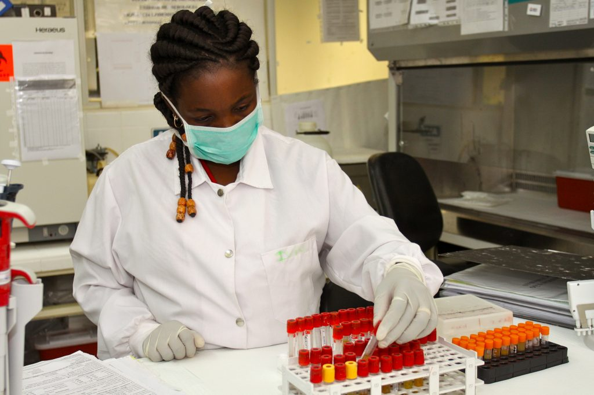

Mortalidade materna
Até 2030, reduzir a taxa de mortalidade materna global para menos de 70 mortes por 100.000 nascidos vivos.

Epidemias
Até 2030, acabar com as epidemias de AIDS, tuberculose, malária e doenças tropicais negligenciadas, e combater a hepatite, doenças transmitidas pela água, e outras doenças transmissíveis.
Drogas
Reforçar a prevenção e o tratamento do abuso de substâncias, incluindo o abuso de drogas entorpecentes e uso nocivo do álcool.